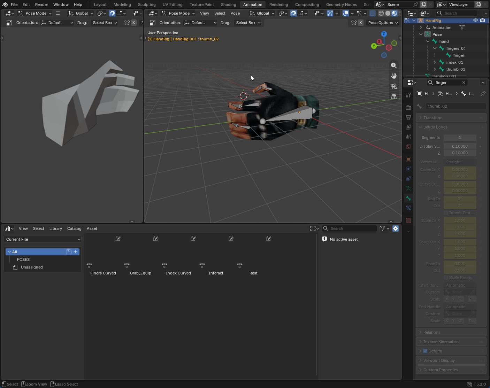
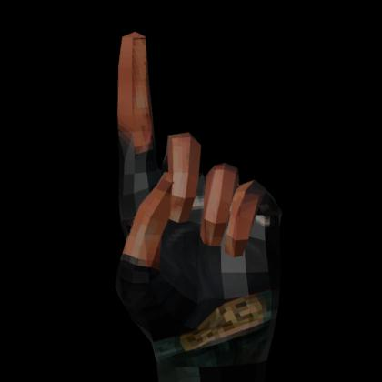
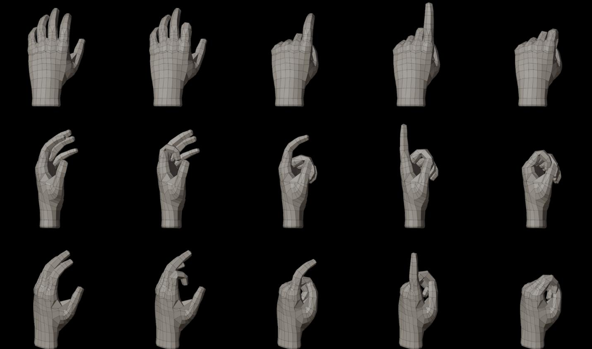
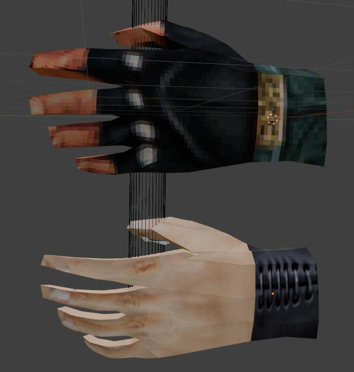
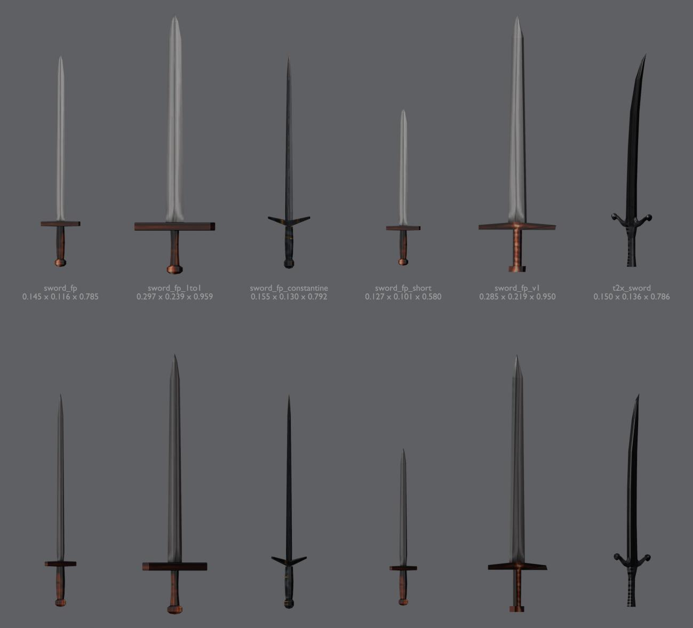

HOW DID I MAKE HAND ON BLENDER.
I searched on pinterest: “hand drawing reference”, and did get some pictures:


These are the ones I used as reference, I did a Low-Poly hands to fit the game aesthetic.

This is how it looked, working with UV Maps is hell, I don’t have the experience with it and no good result as helping me, so I iterate with ai until it gave that result. You can see the fingers are glued together. The community named it “Gorilla Hands”.
I did poses myself, but as the VR mod was become bigger, I need better poses and the fingers being together gave me a lot of issues, so I redid the model (this took 1 week+):


The result was really bad in game, it was unusable.
So I’ve reverted to the OLD one, but still needed the fingers, I tried cutting it, but it was not looking like a hand, so I asked AI. Can you separate the pinky/middle etc..?

With the new HAND every old pose worked, but I need to do the armature on the fingers, with proper weights. So I asked AI to do the armature for the fingers, then I pose it in VR with Finger Tracking.
https://www.youtube.com/shorts/409G3LFgJ5o
As a bonus, here are some Swords.
One of these is made by me, the others are the same but with prompts to fix X or Y. Make the GUARD this way. The one done by me is the fp_1_to_1.
